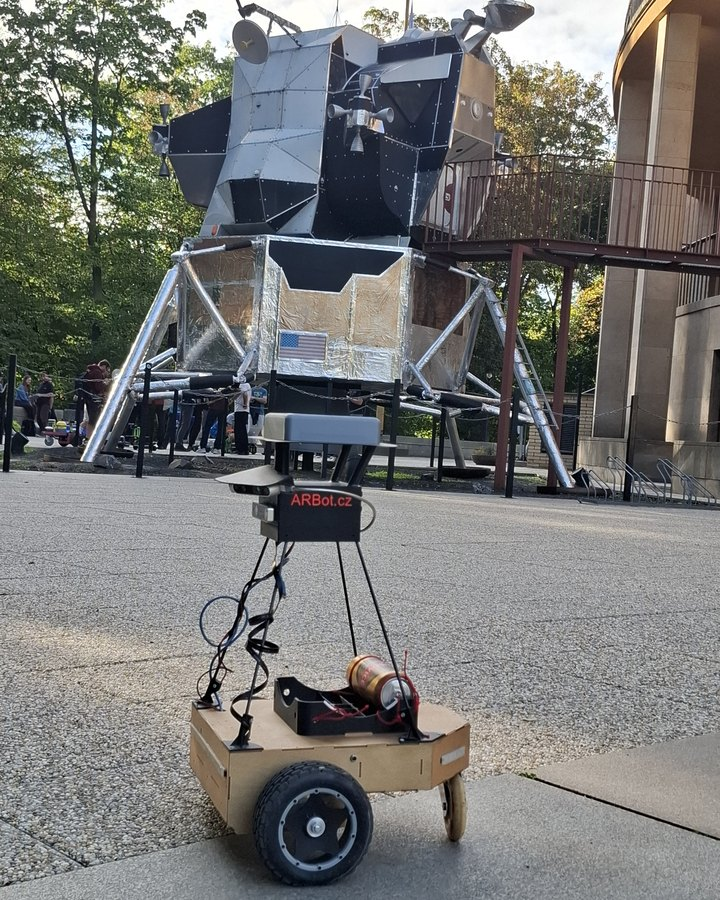

<meta charset="utf-8">
<meta name="viewport" content="width=device-width, initial-scale=1">
<title>ARBot</title>
<link rel="icon" href="assets/img/arbot-logo.png">
<link rel="preconnect" href="https://fonts.googleapis.com">
<link rel="preconnect" href="https://fonts.gstatic.com" crossorigin>
<link rel="stylesheet" href="https://fonts.googleapis.com/css2?family=Archivo:wght@500;600;700&amp;family=JetBrains+Mono:wght@400;600&amp;family=Newsreader:opsz,wght@6..72,400;6..72,500;6..72,600&amp;display=swap">
<link rel="stylesheet" href="assets/site.css">

<header class="sitehead">
  <a class="brand" href="index.html"><span>ARBot</span></a>
  <nav>
      <a href="index.html" class="on">Úvod</a>
      <a href="pages/prezentace.html">Jak to funguje</a>
      <a href="pages/historie.html">Historie</a>
      <a href="pages/umisteni-v-soutezich.html">Umístění v soutěžích</a>
      <a href="pages/verze.html">Verze</a>
      <a href="pages/technicke-clanky.html">Technické články</a>
      <a href="pages/kontakt.html">Kontakt</a>
  </nav>
</header>

<main>

<header class="hero">
  <div class="hero-in hero-split">
    <div>
      <p class="eyebrow">Autonomní mobilní robot &middot; hobby projekt</p>
      <h1>ARBot</h1>
      <p>Z místa A na místo B &mdash; po parkových cestách, bez řidiče a bez cizí pomoci.</p>
      <p class="sub">Vozítko, a hlavně algoritmy: zvolit si rozumnou trasu, vyhnout se kolizím
         a ochránit samo sebe.</p>
      <div class="stats">
        <div class="stat"><span class="stat-n">10&times;/s</span><span class="stat-l">rozhodne, kam jet dál</span></div>
        <div class="stat"><span class="stat-n">2,7 ms</span><span class="stat-l">mu trvá poznat v obraze cestu</span></div>
        <div class="stat"><span class="stat-n">4,09 km</span><span class="stat-l">nejdelší jízda bez zásahu člověka</span></div>
        <div class="stat"><span class="stat-n">7&times;</span><span class="stat-l">první místo v soutěži od roku 2009</span></div>
      </div>
    </div>
    <figure class="hero-photo">
      
    </figure>
  </div>
</header>

<section class="first">
  <p class="eyebrow">Úvod</p>
  <h2>Co ARBot je a kam míří</h2>
  <p class="lead">ARBot je malý autonomní robot. Od začátku vznikal jako hobby projekt pro soutěž
     Robotour: postavit vozítko a hlavně vymyslet algoritmy, které mu dají aspoň tolik
     samostatnosti, kolik má mravenec nebo včela.</p>
  <p>Robotour je simulace autonomního doručování: robot dojede na místo nakládky, z QR kódu si
     přečte, kam má náklad odvézt, a odveze ho. Tím nákladem je pětilitrový soudek piva
     &mdash; zadání, kterému v Česku rozumí každý.</p>
  <p>Na Robotouru i na jednodušším Robotem rovně platí totéž: jede se po parkových cestách, na
     trávník se nesmí, překážkám &mdash; přirozeným i lidským &mdash; je potřeba se vyhnout
     a kytičkám ani divákům neublížit. A to všechno zcela autonomně, bez cizí pomoci.</p>
  <p>Kam až to může dojít? Účast v silničním provozu. Ale k tomu je to ještě hodně,
     hodně daleko.</p>
</section>

<section>
  <p class="eyebrow">Vidění</p>
  <h2>Co robot vidí</h2>
  <p>Cesta není v obraze označená čarou &mdash; robot si ji musí najít sám, desetkrát za sekundu
     a přímo v počítači, který veze s sebou. Tohle jsou skutečné snímky z jeho kamer a z jeho mapy,
     ne ilustrace.</p>

  <figure>
    
    <figcaption><b>Kde je cesta.</b> Vlevo snímek z kamery, vedle něj rozhodnutí tří různých
      metod &mdash; bílá je sjízdné, černá není. Provozní síť trefí <b>88 % pixelů</b> proti
      ručně obtažené pravdě a rozhodne se za 2,7 ms.</figcaption>
  </figure>

  <figure>
    
    <figcaption><b>Kam jet.</b> Půdorys z webového náhledu, který robot za jízdy vysílá do mobilu:
      šedě síť cest z OpenStreetMap, fialově trasa k cíli, u robotu lokální plán a bod, za kterým
      se právě řídí.</figcaption>
  </figure>
</section>

<section>
  <p class="eyebrow">Výsledky</p>
  <h2>Sedm prvních míst</h2>
  <p>ARBot jezdí soutěže od roku 2009 &mdash; Robotour, Robotem rovně, RoboOrienteering
     a celoroční Robotour Marathon. Vyhrál v nich sedmkrát:</p>
  <ul class="wins">
    <li><b>Robotour Marathon 2023</b><span>4,09 km autonomně</span></li>
    <li><b>Robotem rovně 2023</b><span>314 m po rovné cestě</span></li>
    <li><b>Robotour 2022</b><span>doručení nákladu v parku</span></li>
    <li><b>Robotem rovně 2022</b><span>314 m po rovné cestě</span></li>
    <li><b>Robotour Marathon 2021</b><span>1,28 km autonomně</span></li>
    <li><b>Robotour 2013</b><span>Lodž, Polsko</span></li>
    <li><b>RoboOrienteering 2011</b><span>první vítězství vůbec</span></li>
    <li><b><a href="pages/umisteni-v-soutezich.html">Všechna umístění &rarr;</a></b><span>tabulka po ročnících a zápisky ze závodů</span></li>
  </ul>
</section>

<section>
  <p class="eyebrow">Kam dál</p>
  <h2>Rozcestník</h2>
  <div class="linkcards">
    <a href="pages/prezentace.html">
      <h3>Jak to funguje &rarr;</h3>
      <p>Co se robotovi odehrává v hlavě: vidění, lokalizace, plánování a řízení &mdash;
         vysvětlené od nuly, se schématy a snímky ze skutečných jízd.</p>
    </a>
    <a href="pages/historie.html">
      <h3>Čím si projekt prošel &rarr;</h3>
      <p>Registr úkolů třetí verze: co se kdy ukázalo jako problém, co se s tím udělalo a co
         ještě čeká &mdash; měsíc po měsíci i po oblastech.</p>
    </a>
    <a href="pages/umisteni-v-soutezich.html">
      <h3>Umístění v soutěžích &rarr;</h3>
      <p>Výsledky od roku 2009 a zápisky z jednotlivých ročníků &mdash; včetně těch, kde se
         nevyhrálo a bylo z toho poučení.</p>
    </a>
    <a href="pages/verze.html">
      <h3>Verze robotu &rarr;</h3>
      <p>Čtyři generace stroje od prvního čtyřkolového podvozku po dnešní dvoukolák s Orange Pi,
         s fotkami z dílny i ze závodů.</p>
    </a>
    <a href="pages/technicke-clanky.html">
      <h3>Technické články &rarr;</h3>
      <p>Jednotlivé kusy robotu rozebrané do vzorců: model podvozku, detekce kraje vozovky,
         regulátor sledování dráhy &mdash; odvozené krok za krokem.</p>
    </a>
    <a href="https://github.com/AlesRuda/ARBot3">
      <h3>Zdrojový kód &rarr;</h3>
      <p>Celý projekt je veřejný na GitHubu, včetně vývojové dokumentace, deníku rozhodnutí
         a naměřených čísel ke každému tvrzení.</p>
    </a>
  </div>
</section>

<footer>
  <div class="foot-in">
    <span class="mono">ARBOT &middot; AUTONOMNÍ MOBILNÍ ROBOT</span>
    <span>Zdrojový kód, vývojová dokumentace a měření:
      <a href="https://github.com/AlesRuda/ARBot3">github.com/AlesRuda/ARBot3</a></span>
  </div>
</footer>

</main>
